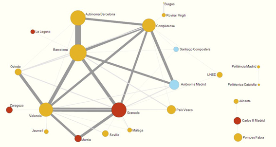
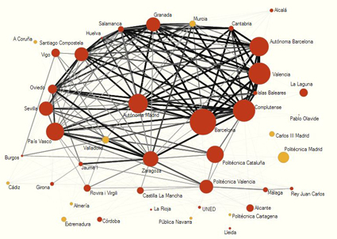
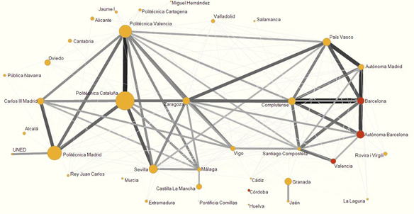
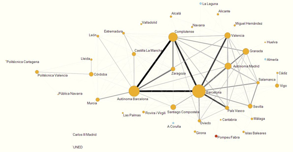
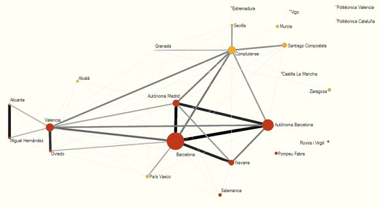
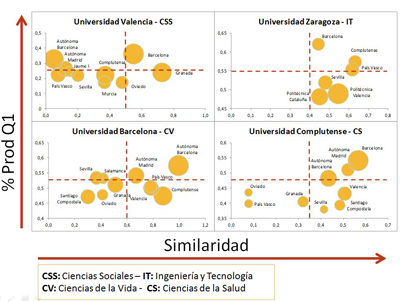

ESTUDIOS / RESEARCH STUDIES
ANÁLISIS DE REDES DE LAS UNIVERSIDADES ESPAÑOLAS DE ACUERDO A SU PERFIL DE PUBLICACIÓN EN REVISTAS POR ÁREAS CIENTÍFICAS
Nicolás Robinson-García*, Rosa Rodríguez-Sánchez**, J. A. García**, Daniel Torres-Salinas***, J. Fdez-Valdivia**
* EC3: Evaluación de la Ciencia y de la Comunicación Científica, Universidad de Granada. Correo-e: elrobin@ugr.es
** Departamento de Ciencias de la Computación e I.A., Universidad de Granada. Correos-e: {rosa, jags, jfv}@decsai.ugr.es
*** EC3: Evaluación de la Ciencia y de la Comunicación Científica, Centro de Investigación Médica Aplicada, Universidad de Navarra. Correo-e: torressalinas@gmail.com
Este trabajo presenta un análisis descriptivo de las universidades españolas de acuerdo a su perfil de publicación en revistas científicas en cinco áreas de conocimiento para el periodo 2007-2011. Dos universidades tienen un perfil de publicación en revistas similar cuando publican en un alto número de revistas comunes. Siguiendo este principio es posible crear mapas de universidades que ofrezcan una visión enriquecedora del sistema universitario español. Para ello, analizamos las áreas de Ciencias Sociales, Ciencias Exactas, Ingeniería y Tecnología, Ciencias de la Vida y Ciencias de la Salud. Además, utilizamos el indicador de centralidad del análisis de redes sociales para identificar aquellas universidades que muestran un rol más destacado en cada área al tener un mayor número de conexiones directas con el resto de universidades. Finalmente, discutimos la aplicación de esta metodología en un contexto de política científica de cara a la búsqueda de colaboraciones científicas potenciales.
NETWORK ANALYSIS OF SPANISH UNIVERSITIES ACCORDING TO THEIR JOURNAL PUBLICATION PROFILE IN SCIENTIFIC AREAS
This study presents a descriptive analysis of Spanish universities according to their journal publication profile in five scientific domains during 2007-2011. Two universities have a similar journal publication profile, if they publish in a high number of common journals. This idea led to the possibility of mapping universities and thus offering an enriched view of the Spanish higher education system. In order to do so, we analysed the areas of Social Sciences, Exact Sciences, Engineering & Technology, Life Sciences, and Health Sciences. We also used the centrality indicator of social network analysis to identify those universities with a greater role in each area; that is, with a higher number of direct connections with the rest of the universities. Finally, the application of this methodology within the context of scientific policy is discussed, for searching for potential scientific partners.
Recibido: 15-11-2012; 2ª versión: 12-03-2013; Aceptado: 01-04-2013.
Cómo citar este artículo/Citation: Robinson-García, N.; Rodríguez-Sánchez, R.; García, J. A.; Torres-Salinas, D.; Fdez-Valdivia, J. (2013). Análisis de redes de las universidades españolas de acuerdo a su perfil de publicación en revistas por áreas científicas. Revista Española de Documentación Científica, 36 (4): e027, doi: http://dx.doi.org/10.3989/redc.2013.4.1042.
PALABRAS CLAVE: Universidades; España; mapas de la ciencia; análisis de redes sociales; perfil de publicación; indicadores bibliométricos; actividad científica.
KEYWORDS: Universities; Spain; maps of science; social networks analysis; publication profile; bibliometric indicators; research activity.
Copyright: © 2013 CSIC. Este es un artículo de acceso abierto distribuido bajo los términos de la licencia Creative Commons Attribution-Non Commercial (by-nc) Spain 3.0.
CONTENIDOS
| RESUMEN |
| ABSTRACT |
| 1. INTRODUCCIÓN |
| 2. MATERIAL Y MÉTODOS |
| 3. RESULTADOS |
| 4. DISCUSIÓN |
| 5. AGRADECIMIENTOS |
| 6. BIBLIOGRAFÍA |
1. INTRODUCCIÓN Top
La hegemonía de las universidades estadounidenses en las primeras posiciones de los rankings internacionales ha tenido un gran impacto en la agenda científica de los países europeos que han visto en dicho predominio el fracaso del modelo universitario europeo frente al modelo estadounidense. Un modelo caracterizado por incentivar la democratización de la enseñanza superior y el equilibrio entre la docencia y la investigación (Schimank y Winnes, 2000Schimank, U.; Winnes, M. (2000). Beyond Humboldt? The relationship between teaching and research in European university systems. Science and Public Policy, 27 (6), pp. 397-408.) frente a un modelo de universidades altamente competitivo (Visser, Calero Medina y Moed, 2007Visser, M. S.; Calero Medina, C.M.; Moed, H.F. (2007). Beyond rankings: The role of large research universities in the global scientific communication system. Proceedings 11th International Conference of the International Society for Scientometrics and Informetrics. Madrid, España: CINDOC-CSIC, pp. 761-765.). A pesar de los esfuerzos de la Unión Europea por establecer un marco metodológico que permitiera mantener las bondades de las universidades europeas (van der Wende y Westerheijden, 2009Van der Wende, M.; Westerheijden, D. (2009). Rankings and classifications: The need for a multidimensional approach. En: van Vught, F.A. (ed.), Mapping the higher education landscape: Towards a European classification for higher education. Springer.) y al mismo tiempo competir por la excelencia, lo cierto es que el éxito de las universidades americanas ha precipitado a los distintos gobiernos a la búsqueda de nuevas fórmulas que permitan alcanzar altas posiciones en dichos rankings para ganar prestigio así como los recursos económicos y humanos que éste trae consigo (Hazelkorn, 2009Hazelkorn, E. (2009). Rankings and the battle for world-class excellence: Institutional strategies and policy choices. Higher Education Management and Policy, 21 (1), pp. 55-76.). En este sentido, el conocido Ranking de Shanghai (Liu y Chen, 2005Liu, N.C.; Chen, Y. (2005). The Academic Ranking of World Universities. Higher Education in Europe, 30 (2), pp. 127-136.) cuya primera edición data de 2003, ha logrado posicionarse como referente mundial de gobiernos y universidades, que lo emplean para conocer su situación y establecer políticas encaminadas a mejorar su posición (Docampo y otros, 2012Docampo, D.; Herrera, F.; Luque-Martínez, T.; Torres-Salinas, D. (2012). Efecto de la agregación de universidades españolas en el Ranking de Shanghai (ARWU): caso de las comunidades autónomas y los campus de excelencia. El profesional de la información, 21 (4), pp. 428-432.; Hazelkorn, 2011Hazelkorn, E. (2011). Rankings and the reshaping of higher education: The battle for world-class excellence. Basingstoke, UK, New York: Palgrave MacMillan.). No obstante, las graves limitaciones de estos productos (Van Raan, 2005Van Raan, A.F.J. (2005). Fatal attraction: conceptual and methodological problems in the ranking of universities by bibliometric methods. Scientometrics, 62 (1), pp. 133-143.; Billaut, Boyssou y Vincke, 2010Billaout, J.-C.; Bouyssou, D.; Vincke, P. (2010). Should we believe the Shanghai Ranking? An MCDM view. Scientometrics, 84 (1), pp. 237-263.), así como una interpretación errónea y a veces simplista de los resultados pueden tener efectos nocivos en el sistema universitario (Docampo y otros, 2012Docampo, D.; Herrera, F.; Luque-Martínez, T.; Torres-Salinas, D. (2012). Efecto de la agregación de universidades españolas en el Ranking de Shanghai (ARWU): caso de las comunidades autónomas y los campus de excelencia. El profesional de la información, 21 (4), pp. 428-432.; Macilwain, 2012Macilwain, C. (2012). Excellence, Ja, Elitism, Non. Science, vol. 338, pp. 596-599.).
De manera paralela, se han ido desarrollando una serie de metodologías para el análisis de las universidades que permitieran sobrepasar muchas de estas limitaciones ofreciendo una visión más ajustada de la realidad universitaria. En efecto, además de las limitaciones técnicas que resultan de la tarea de realizar un ranking internacional de universidades, los principales problemas se derivan de las siguientes razones: (1) los criterios de selección de los indicadores no están científicamente argumentados (van Raan, 2005Van Raan, A.F.J. (2005). Fatal attraction: conceptual and methodological problems in the ranking of universities by bibliometric methods. Scientometrics, 62 (1), pp. 133-143.), (2) el carácter multidimensional de las universidades (Orduña-Malea, 2011Orduña-Malea, E. (2011). Propuesta de un modelo de análisis redinformétrico multinivel para el estudio sistémico de las universidades. Valencia: Universidad Politécnica de Valencia, [Tesis doctoral].) resulta en instituciones muy heterogéneas entre sí (Collini, 2011Collini, S. (2011). What are universities for? London, UK: Penguin Books.) y (3) la apuesta por rankings globales no considera el perfil disciplinario de las universidades (Visser y otros, 2007Visser, M. S.; Calero Medina, C.M.; Moed, H.F. (2007). Beyond rankings: The role of large research universities in the global scientific communication system. Proceedings 11th International Conference of the International Society for Scientometrics and Informetrics. Madrid, España: CINDOC-CSIC, pp. 761-765.; Torres-Salinas y otros, 2011aTorres-Salinas, D.; Delgado López-Cózar, E.; Moreno-Torres, J.G.; Herrera, F. (2011a). Rankings ISI de las universidades españolas según campos científicos: descripción y resultados. El profesional de la información, 20 (1), pp. 111-118.). Un buen ejemplo de la complejidad que supone evaluar estas instituciones se evidencia en el trabajo de Bordons y otros (2010Bordons, M.; Sancho, R.; Morillo, F.; Gómez, I. (2010). Perfil de actividad científica de las universidades españolas en cuatro áreas científicas: un enfoque multifactorial. Revista Española de Documentación Científica, 33 (1), pp. 9-33.), en el que ponen de relieve los diferentes factores estructurales y contextuales que pueden incidir en la capacidad investigadora de las universidades. Tal complejidad hace poco recomendable el análisis global de las universidades a favor de análisis específicos de cada una de sus actividades. En este sentido, surgen nuevos rankings y metodologías dirigidos al análisis de alguna de las facetas de estas instituciones. Palomares-Montero, García-Aracil y Castro-Martínez (2008Palomares-Montero, D.; García-Aracil, A.; Castro-Martínez, E. (2008). Evaluación de las instituciones de educación superior: revisión bibliográfica de sistemas de indicadores. Revista Española de Documentación Científica, 31 (2), pp. 205-229.) ofrecen una interesante revisión bibliográfica de indicadores para el análisis de universidades.
Entre estas metodologías complementarias se encuentran los mapas de la ciencia que han demostrado ser herramientas muy útiles para la toma de decisiones en política científica (Noyons, 2004Noyons, E. (2004). Science maps within a science policy context. En: Moed, H.F.; Glänzel, W.; Schmochl, U. (eds.), Handbook of quantitative science and technology research. New York, EE.UU.: Kluwer Academic Publishers.). Una de las propuestas más recientes en este sentido es el mapeo de universidades a través del Journal Publication Profile (JPP de ahora en adelante) presentado por García y otros (2012García, J.A.; Rodríguez-Sánchez, R.; Fdez-Valdivia, J.; Robinson-García, N.; Torres-Salinas, D. (2012). Mapping academic institutions according to their journal publication profile: Spanish universities as a case of study. Journal of the American Society for Information Science and Technology, 63 (11), pp. 2328-2340.). Este nuevo método de visualización propone un modelo de representación reticular de agentes científicos (universidades, países, etc.) basado en su similaridad a partir de su perfil de publicación en revistas científicas indexadas en los Journal Citation Reports (JCR), identificando el parecido de los agentes bajo estudio en función de las revistas comunes en las que éstos publican. Es decir, dos universidades se parecerán más entre sí si publican sus trabajos en las mismas revistas científicas, asemejándose así tanto en impacto como temáticamente. Como método final de visualización de los valores de similaridad los autores emplean el análisis de redes sociales, una metodología ampliamente utilizada en la literatura bibliométrica para estudiar las redes que se generan a partir de la cocitación (Small, 1973Small, H. (1973). Cocitation in the scientific literature: a new measure of the relationship between two documents. Journal of the American Society for Information Science, 24 (4), pp. 265-269.), la coautoría (Beaver, 2001Beaver, D. (2001). Reflections on collaboration (and its study): past, present and future. Scientometrics, 52 (3), pp. 365-377.) o la participación en tribunales de tesis (Delgado López-Cózar y otros, 2006Delgado López-Cózar, E.; Torres-Salinas, D.; Jiménez-Contreras, E.; Ruiz-Pérez, R. (2006). Análisis bibliométrico y de redes sociales aplicado a las tesis bibliométricas defendidas en España (1976-2002): temas, escuelas científicas y redes académicas. Revista Española de Documentación Científica, 29 (4), pp. 493-524.) entre otros.
Teniendo en cuenta por un lado las limitaciones de los rankings para representar los sistemas de educación superior y por otro la utilidad de las propuestas de mapeo reseñadas, el principal objetivo de este estudio es la aplicación práctica de la metodología del JPP para realizar un análisis descriptivo en profundidad de las universidades españolas de forma que se pueda obtener un retrato mucho más certero del sistema universitario español. Más específicamente podemos establecer como objetivos:
1) La realización de mapas de la ciencia para conocer la similitud temática en investigación entre universidades españolas en función de su perfil de publicación en revistas científicas JCR en los últimos cinco años (2007-2011) para cinco grandes áreas: Ciencias Sociales, Ciencias Exactas, Ingeniería y Tecnología, Ciencias de la Vida y Ciencias de la Salud.
2) Estudiar el papel que juega cada universidad dentro de cada una de las áreas analizadas a partir del indicador de centralidad que nos proporciona el análisis de redes sociales. Se identificarán las universidades que tienen un papel preponderante dentro de un área, así como las áreas en las que el perfil disciplinario de las universidades es más heterogéneo.
2. MATERIAL Y MÉTODOS Top
Procesamiento y recogida de datos
En este estudio analizamos las universidades españolas en función de su perfil de publicación en revistas científicas. Para ello, en primer lugar seleccionamos los índices de revistas de la base de datos de Thomson Reuters Web of Science (de ahora en adelante WoS) como fuente de datos. Basamos esta decisión en la importancia que dicha base de datos tiene dentro del sistema de política científica española. El periodo de estudio corresponde al quinquenio 2007-2011; la elección de dicho periodo responde a la necesidad de establecer un margen lo suficientemente amplio para que los resultados ofrecidos sean estables y al mismo tiempo muestren una imagen lo más actual posible de la situación de las universidades. A continuación realizamos una búsqueda manual en el campo address de la WoS de las 77 universidades españolas teniendo en cuenta todas las variantes de firma de cada institución. Descargamos toda la producción de aquellas universidades con al menos 125 documentos citables (artículos, revisiones, notas o cartas), asignándola a cada institución e introduciéndola en una base de datos relacional para el cálculo de indicadores. Esto nos permite calcular el Índice de Actividad Temática (de ahora en adelante IAT). Este compara el porcentaje de trabajos que una universidad publica en un área determinada con el porcentaje que la población analizada dedica a dicha área.
También procedimos a la descarga de las ediciones de los JCR para el periodo de tiempo analizado y finalmente, para cada universidad solo tuvimos en cuenta la producción indexada en los JCR. Asimismo los JCR nos permitieron calcular el porcentaje de publicaciones en revistas del primer cuartil para cada universidad. Construimos las cinco áreas científicas (Ciencias Sociales, Ciencias Exactas, Ingeniería y Tecnología, Ciencias de la Vida y Ciencias de la Salud) a partir de la agregación de las diferentes categorías temáticas de los JCR, método seguido en otros estudios como por ejemplo los ‘Rankings I-UGR’ (Torres-Salinas y otros, 2012Torres-Salinas, D.; Moreno-Torres, J.G.; Robinson-García, N.; Delgado López-Cózar, E.; Herrera, F. (2012). Rankings I-UGR de universidades españolas según campos y disciplinas científicas (3ª edición). Disponible en: http://rankinguniversidades.es/ [Consultado el 12 de noviembre de 2012].). Finalmente, a la hora de representar los mapas de universidades y con el fin de facilitar su lectura, hemos introducido un rango de colores para cada universidad indicando el porcentaje de publicaciones en revistas del primer cuartil. Aunque no es necesario para establecer el perfil de publicación de las universidades, de este modo se enriquece el análisis permitiendo al lector observar qué universidades consiguen publicar un mayor porcentaje de documentos en revistas de alto impacto.
Metodología para el mapeo de universidades de acuerdo a su perfil de publicación en revistas científicas
Para realizar un análisis descriptivo de las universidades españolas en función de su perfil de publicación en revistas científicas es necesario, en primer lugar, identificar las revistas en las que publican los investigadores de una institución durante cierto periodo de tiempo. A partir de esta lista de revistas científicas se crea una matriz revista-universidad donde las filas contienen los pesos correspondientes a cada revista para todas las universidades. La idea básica de la que parte esta metodología es que dos universidades que publican en las mismas revistas tendrán un perfil más similar que otras dos que no lo hacen. Para generar los pesos de las revistas utilizamos un enfoque de frecuencia inversa (Salton y Buckley, 1988Salton, G.; Buckley, C. (1988). Term-weighting approaches in automatic text retrieval. Information Processing and Management, 24 (5), pp. 513-523.), ya que normalmente una revista en la que muchos investigadores de diferentes instituciones publican sus artículos será un mal indicador de la similaridad entre dos universidades. Siguiendo un enfoque de similaridad documento a documento (Ahlgren y Colliander, 2009Ahlgren, P.; Colliander, C. (2009). Document-document similarity approaches and science mapping: Experimental comparison of five approaches. Journal of Informetrics, 3 (1), pp. 49-63.) podremos inferir el comportamiento de la similaridad institución-institución a través de dos tipos de similaridades: de primer orden y de segundo orden. Las similaridades de primer orden se obtienen midiendo la similaridad entre columnas de la matriz revista-universidad. Sin embargo, podemos ir un paso más allá y obtenerlas midiendo la similaridad entre las columnas de esta matriz de similaridad de primer orden universidad-universidad.
Esta operación creará una nueva matriz universidad-universidad, en la que los valores indican similaridades de segundo orden. Cuando utilizamos similaridades de primer orden calculamos la similaridad directa entre dos universidades. Sin embargo, el enfoque de segundo orden determina que dos universidades son similares si la similaridad con el resto de universidades es semejante. De este modo, podemos aplicar el análisis de clúster para agrupar las universidades utilizando valores de disimilaridad de segundo orden universidad-universidad. Para realizar el análisis de clúster hemos empleado el método de vinculación completa (Everitt, Landau y Leese, 2001Everitt, B.; Landau, S.; Leese, M. (2001). Cluster analysis. (4ª ed.). Londres: Addison-Wesley.). Una vez agrupadas las universidades de acuerdo a su perfil de publicación en revistas, construimos los dendrogramas con dichas agrupaciones. Finalmente, creamos los mapas de universidades empleando el software Pajek versión 3.01. Sin embargo, la matriz resultante presenta problemas de visualización, al ofrecer un grafo completo con conexiones de todas a todas las universidades. Para resolver este problema establecemos un umbral mínimo de similaridad de 0,70. La elección de un umbral con dicho valor nos permite eliminar del mapa aquellas conexiones entre universidades con menor valor de similaridad, visualizando únicamente las relaciones más fuertes que se observan en cada área, lo cual simplifica y clarifica el análisis del panorama universitario según el perfil de publicación en revistas. Para mayor detalle sobre la metodología empleada referimos al lector al trabajo de García y otros (2012García, J.A.; Rodríguez-Sánchez, R.; Fdez-Valdivia, J.; Robinson-García, N.; Torres-Salinas, D. (2012). Mapping academic institutions according to their journal publication profile: Spanish universities as a case of study. Journal of the American Society for Information Science and Technology, 63 (11), pp. 2328-2340.).
Análisis de redes sociales: el concepto de centralidad
El análisis de redes sociales es una metodología importada del ámbito de la sociología y ampliamente utilizada en el ámbito de la bibliometría (Glänzel y Schubert, 2004Glänzel, W.; Schubert, A. (2004). Analysing scientific networks through co-authorship. En: Moed, H.F.; Glänzel, W.; Schmochl, U. (eds.), Handbook of quantitative science and technology research. New York, EE.UU.: Kluwer Academic Publishers.; Wagner y Leydesdorff, 2005Wagner, C.S.; Leydesdorff, L. (2005). Network structure, self-organization, and the growth of international collaboration in science. Research Policy, 34 (10), pp. 1608-1618.), que permite identificar estructuras subyacentes de la relación entre distintos actores y las situaciones de poder y subordinación que se dan entre ellos. Así pues, se consideran con más poder aquellos actores situados en posiciones ‘ventajosas’ o centrales, entendiendo por poder una mayor conexión o influencia con el resto de actores. Esta influencia o poder quedará definida en función del elemento de unión que se considere en el análisis, por lo que es preferible utilizar el término de ‘centralidad’ para referirse a dicho rol. Además, dicho análisis permite identificar ciertas propiedades y medidas que permiten caracterizar la estructura de las distintas redes. Para más información acerca de dichas propiedades y medidas referimos al lector a Sanz Menéndez (2003Sanz-Menéndez, L. (2003). Análisis de redes sociales: o cómo representar las estructuras sociales subyacentes. Documento de trabajo 03-07, Unidad de Políticas Comparadas. Disponible en: http://digital.csic.es/bitstream/10261/1569/1/dt-0307.pdf [Consultado el 11 de marzo de 2013].). Aquí destacaremos dos de ellas de cara a la interpretación de los resultados: el grado de exclusividad, que muestra las posibilidades de acceso que tienen los actores externos a una red determinada (a mayor grado, mayor dificultad); y la propiedad de transitividad, que indica la probabilidad de que dos vecinos de un nodo con una similaridad fuerte a este nodo sean a su vez similares entre sí.
En el presente trabajo, el uso del indicador de centralidad permitirá analizar en profundidad cómo se agrupan las universidades por área. En este sentido, la universidad con un mayor valor de centralidad en un área determinada será aquella que publica un mayor número de trabajos en revistas comunes con el resto de universidades de la red. Para calcular la centralidad de los actores de una red existen tres indicadores: grado, cercanía e intermediación (Delgado López-Cózar y otros, 2006Delgado López-Cózar, E.; Torres-Salinas, D.; Jiménez-Contreras, E.; Ruiz-Pérez, R. (2006). Análisis bibliométrico y de redes sociales aplicado a las tesis bibliométricas defendidas en España (1976-2002): temas, escuelas científicas y redes académicas. Revista Española de Documentación Científica, 29 (4), pp. 493-524.). En este trabajo utilizaremos la cercanía, que mide la capacidad de cada uno de los actores de la red de conectar con otros directamente y sin necesidad de intermediarios. De este modo, identificamos aquellas universidades que guardan similaridad con un mayor número de universidades dentro de un área.
Material complementario On-line
Para facilitar la comprensión del artículo hemos elaborado una web (http://www.ugr.es/~elrobin/jpp.html) en la que el lector puede encontrar material complementario. Además, hemos elaborado un documento en el que se incluyen datos adicionales derivados del estudio (Robinson-García y otros, 2012Robinson-García, N.; Rodríguez-Sánchez, R.; García, J.A.; Torres-Salinas, D.; Fdez-Valdivia, J. (2012). Material complementario del estudio ‘Análisis de redes de las universidades españolas de acuerdo a su perfil de publicación en revistas por áreas científicas’. Disponible en: http://hdl.handle.net/10481/22367 [Consultado el 15 de noviembre de 2012].). En este documento incluimos los siguientes datos para cada una de las cinco áreas analizadas. En primer lugar, los indicadores bibliométricos necesarios para el cálculo del perfil de las universidades, esto es: producción y porcentaje de documentos publicados en revistas indexadas en el primer cuartil. En segundo lugar, ofrecemos los dendrogramas derivados de los mapas de universidades de cada área. Finalmente, hemos introducido árboles de expansión mínima que sirven de apoyo visual para analizar la estructura de los mapas de universidades.
3. RESULTADOS Top
Resultados generales
De las 77 universidades españolas que conforman el sistema universitario español, 57 de ellas tienen una producción citable superior a 125 documentos para el periodo 2007-2011. En la tabla I mostramos la producción (Prod) y el porcentaje de publicaciones en revistas del primer cuartil (%Prod Q1) de estas universidades. La universidad más productiva es Barcelona con 15940 documentos, seguida por la Autónoma de Barcelona (12060 documentos) y la Complutense de Madrid (11346 documentos). La universidad con una mayor proporción de sus documentos publicados en revistas del primer cuartil (Q1) es Pompeu Fabra con un 59% de su producción en revistas Q1, seguida por Barcelona (57%).
Cinco universidades copan las primeras posiciones como las más productivas en cuatro de las cinco áreas analizadas (Ciencias Sociales, Ciencias Exactas, Ciencias de la Vida y Ciencias de la Salud) con algunas excepciones (Robinson y otros, 2012Robinson-García, N.; Rodríguez-Sánchez, R.; García, J.A.; Torres-Salinas, D.; Fdez-Valdivia, J. (2012). Material complementario del estudio ‘Análisis de redes de las universidades españolas de acuerdo a su perfil de publicación en revistas por áreas científicas’. Disponible en: http://hdl.handle.net/10481/22367 [Consultado el 15 de noviembre de 2012].). En primer lugar se posiciona Barcelona, que ocupa el primer puesto en las cuatro áreas. A continuación, la Autónoma de Barcelona, que es la segunda universidad más productiva en tres de las cuatro áreas, seguida de Complutense que se sitúa siempre entre la segunda y la quinta posición, Valencia (entre la tercera y la sexta universidad más productiva por área) y la Autónoma de Madrid (ocupa entre el cuarto y el sexto puesto). En el área restante, Ingeniería y Tecnología, se ve un patrón de producción muy distinto, relegando a las universidades anteriores. Así pues, las universidades más productivas en esta área son: Politécnica de Cataluña, Politécnica de Madrid y Politécnica de Valencia. En relación al porcentaje de documentos en el primer cuartil, Barcelona es la tercera con más publicaciones en revistas Q1 (36%) en Ciencias Sociales, la segunda en Ciencias Exactas y la segunda en Ciencias de la Salud (54%). Otra de las universidades a destacar es la Pompeu Fabra, que es la universidad con un mayor % Prod Q1 en las áreas de Ciencias Sociales (43%) y Ciencias de la Salud (59%), la segunda en Ciencias de la Vida (70%) y la tercera en Ciencias Exactas (68%). En el área de Ingeniería y Tecnología destaca Córdoba que se sitúa como la segunda universidad con mayor Prod Q1 (67%), Valencia ocupa el tercer puesto (64%) y Barcelona (62%) y la Autónoma de Barcelona (61%) ocupan los puestos quinto y sexto respectivamente.
Siguiendo el análisis de la producción de universidades por áreas en función de su índice de actividad temática (IAT) (Tabla II), observamos nuevamente el perfil claramente enfocado hacia la Ingeniería y Tecnología de las universidades politécnicas. No obstante, éstas no son las únicas que muestran una mayor actividad en un área determinada. Así, Pompeu Fabra tiene un alto IAT (2,18) en Ciencias Sociales al igual que Jaume I (2,08), UNED (3,10), Pablo Olavide (2,80) y Ramón Llull (3,74). Por su parte, Carlos III de Madrid destaca en Ciencias Sociales (2,46) e Ingeniería y Tecnología (2,77), León en Ciencias de la Vida (2,25) y Navarra en Ciencias de la Salud (2,09). Por último, señalar la alta especialización de aquellas universidades con una menor producción como Cardenal Herrera, Pontificia de Comillas, Católica de San Antonio o Deusto entre otras.
Mapas de universidades de acuerdo a su perfil de publicación en revistas para cada área científica
A continuación mostramos los mapas de similaridad de las universidades españolas en cinco grandes áreas (Figuras 1-5). Cada nodo representa una universidad. El grosor del nodo o vértice viene dado por el porcentaje de documentos publicados en revistas Q1. Los enlaces entre los vértices representan la semejanza entre las instituciones implicadas. Un enlace más grueso responde a una mayor similaridad.
En la Figura 1 mostramos el mapa en el área de Ciencias Sociales. En ella se observan tres perfiles claramente diferenciados. Un grupo principal, formado por cinco universidades de gran producción (Granada, Barcelona, Valencia, Complutense y Autónoma de Barcelona) rodeadas por universidades de menor impacto que se sitúan en la periferia. Este grupo aglutina a la mayoría de las universidades y se caracteriza por tener un pequeño grupo de universidades en el centro muy similares entre sí a las cuales conectan el resto de universidades. Alrededor de cada uno de estos nodos se aglutinan universidades de menor producción. Por otro lado, destacar el gran parecido entre el perfil de publicación de la Autónoma de Barcelona y Barcelona. El segundo perfil de universidades que se observa es el de las politécnicas (Politécnica de Madrid y Politécnica de Cataluña), demostrando un patrón de publicaciones en revista diferente al resto. Estas dos universidades se caracterizan por su poca producción. El tercer caso es el de Carlos III de Madrid, Pompeu Fabra y Alicante. Carlos III de Madrid y Pompeu Fabra son especialmente productivas en el área de Ciencias Sociales de acuerdo a su IAT (Tabla II). Si comparamos estos resultados con los de la tercera edición de los Rankings I-UGR de universidades españolas (Torres-Salinas y otros, 2012Torres-Salinas, D.; Moreno-Torres, J.G.; Robinson-García, N.; Delgado López-Cózar, E.; Herrera, F. (2012). Rankings I-UGR de universidades españolas según campos y disciplinas científicas (3ª edición). Disponible en: http://rankinguniversidades.es/ [Consultado el 12 de noviembre de 2012].), vemos que estas universidades se sitúan en las primeras posiciones del ranking de Economía para el mismo periodo de tiempo analizado (Pompeu Fabra en primer lugar, Carlos III de Madrid en cuarta posición y Alicante en sexto lugar). Este fuerte perfil en el área de Economía explica tal agrupación.
|
Figura 1. Mapa de similaridad de las universidades españolas de acuerdo a su perfil de publicación en revistas en Ciencias Sociales  |
Muy distinto es el retrato del área de Ciencias Exactas que mostramos en la figura 2. Una red muy densa en la que prácticamente todas las universidades tienen patrones de similaridad muy fuertes entre sí. En este caso, la red se caracteriza por cumplir en mayor medida que en el resto de áreas la propiedad de transitividad. Esta propiedad se refiere a que existe una probabilidad alta de que dos vecinos de un nodo, ambos con una similaridad fuerte a este nodo, sean a su vez similares entre ellos con respecto a sus perfiles de publicación en revistas. El elevado nivel de agrupamiento de la red implica un alto grado de exclusividad, algo que no ocurre en el resto de áreas.
|
Figura 2. Mapa de similaridad de las universidades españolas de acuerdo a su perfil de publicación en revistas en Ciencias Exactas  |
La mayoría de las universidades tienen una producción alta o media con más del 55% de su producción perteneciente a revistas Q1. Se observa un núcleo con universidades muy similares entre sí (Complutense, Autónoma de Barcelona y Valencia) con protagonismos singulares como el caso de Zaragoza que se une además a universidades de la periferia como Castilla La Mancha, Rovira i Virgili o Politécnica de Valencia. Algunas de las universidades situadas en la periferia se agrupan en función de factores geográficos (por ejemplo las universidades gallegas). Sin embargo esto no ocurre en otros casos como por ejemplo la alta similaridad existente entre la Politécnica de Valencia y Málaga, y Rey Juan Carlos y Málaga por otro lado, mostrando líneas de investigación cercanas entre los investigadores de estas instituciones. Si bien la red integra a las universidades politécnicas al contrario de lo que ocurre en otras áreas, es destacable el comportamiento de dos universidades de perfil politécnico, Politécnica de Madrid y Carlos III de Madrid (como se observa en la tabla II), que se sitúan fuera del núcleo del área aún teniendo una producción relativamente elevada. Esto indica que publican en revistas distintas al resto, incluyendo a las otras universidades politécnicas.
La figura 3 muestra el mapa de universidades en el área de la Ingeniería y la Tecnología. En este caso vemos una red bipolar con dos núcleos claramente diferenciados con distintos perfiles de publicación unidos a través de Zaragoza que tiene gran similaridad tanto con la Complutense como con la Politécnica de Cataluña. Esta bipolaridad se constata al observar el árbol de expansión mínima (Robinson-García y otros, 2012Robinson-García, N.; Rodríguez-Sánchez, R.; García, J.A.; Torres-Salinas, D.; Fdez-Valdivia, J. (2012). Material complementario del estudio ‘Análisis de redes de las universidades españolas de acuerdo a su perfil de publicación en revistas por áreas científicas’. Disponible en: http://hdl.handle.net/10481/22367 [Consultado el 15 de noviembre de 2012].). A la izquierda de la figura se agrupan las tres universidades politécnicas con un papel destacado de la Politécnica de Cataluña como eje central. Además, destacan Sevilla y Carlos III de Madrid. La Politécnica de Valencia muestra una gran similaridad con la Politécnica de Cataluña. El otro núcleo está formado por las grandes universidades generalistas españolas, esto es; Complutense en posición central, Barcelona, Autónoma de Madrid y Autónoma de Barcelona. A este grupo se unen Santiago de Compostela, Valencia y País Vasco. Es reseñable la posición de Vigo que aunque es similar a Santiago de Compostela, también muestra una gran similaridad con Zaragoza, Politécnica de Valencia, Politécnica de Cataluña y Carlos III de Madrid, mostrando de este modo un comportamiento más similar al de éstas últimas.
|
Figura 3. Mapa de similaridad de las universidades españolas de acuerdo a su perfil de publicación en revistas en Ingeniería y Tecnología  |
El comportamiento de las universidades andaluzas pone de relieve una de las principales facetas de las universidades que muestran los mapas de acuerdo al perfil de publicación en revistas: la similaridad en función del perfil disciplinario. Las siete universidades andaluzas que mostramos en este mapa se sitúan en la parte inferior de la figura, sin embargo, se observan tres subgrupos. Por un lado estarían Málaga y Sevilla con un perfil más cercano al de las universidades politécnicas. Después está Granada y Jaén, muy similares entre sí y más apegadas al grupo de las grandes universidades generalistas. Y por último, en una situación intermedia, se ubican Cádiz, Córdoba y Huelva.
En la figura 4 mostramos el mapa de universidades para el área de Ciencias de la Vida. Todas las universidades se agrupan en torno a la Complutense, la Autónoma de Barcelona y Barcelona, que forman el núcleo de la red. A excepción de dos universidades, Carlos III y UNED, que aparecen unidas entre sí y aisladas del resto de universidades, pero con una producción de poco tamaño e impacto. También observamos una gran similaridad de Barcelona con Valencia y País Vasco. Asimismo, destaca el aislamiento de Córdoba, Lleida, Politécnica de Valencia y Politécnica de Cartagena, que aún estando incluidas en la red, aparecen desplazadas y creando un pequeño subgrupo. Es muy relevante el papel de Pompeu Fabra, la única universidad con un porcentaje de producción en revistas Q1 superior al 60% que se muestra en el mapa y, por tanto, muestra una baja similaridad con el resto de la red.
|
Figura 4. Mapa de similaridad de las universidades españolas de acuerdo a su perfil de publicación en revistas en Ciencias de la Vida  |
El mapa de Ciencias de la Salud (Figura 5) muestra cierto parecido con el anterior, en tanto en cuanto observamos en primer lugar una gran red que gira en torno a un núcleo formado por tres universidades principalmente (Autónoma Madrid, Autónoma Barcelona y Barcelona). Alrededor de estas tres universidades hay otras similares al núcleo, con un tamaño de producción medio pero también de alto impacto (más del 45% de la producción perteneciente a revistas Q1). Estas universidades son Valencia y Navarra. También Complutense se uniría a este grupo si no fuera por tener una producción con un impacto medio (su producción en revistas Q1 se sitúa entre el 25 y el 45% del total). Valencia y Complutense aglutinan a su vez, alrededor suya una red de universidades con perfiles muy similares a los suyos. Por ejemplo, Valencia y Oviedo o Complutense y Santiago de Compostela. El caso de Navarra es reseñable al dedicar un mayor esfuerzo a esta área (Tabla II), comportándose claramente como una institución especializada en el ámbito de Ciencias de la Salud.
|
Figura 5. Mapa de similaridad de las universidades españolas de acuerdo a su perfil de publicación en revistas en Ciencias de la Salud  |
Por otra parte, Politécnica de Valencia y Politécnica de Cataluña aparecen relacionadas pero aisladas del resto de la red, mostrando nuevamente un perfil diferente al del resto de las universidades. Finalmente, indicar nuevamente el alto impacto de Pompeu Fabra que, aun estando incluida en la red, muestra unos patrones de similaridad bajos con el resto de las universidades.
En la tabla III mostramos las similaridades promedio de las 57 universidades analizadas. Observamos que Ciencias Exactas es el área en la que las universidades muestran una mayor similaridad promedio (0,52), mucho más alta que en los casos de Ciencias de la Salud (0,40) y Ciencias Sociales (0,42). La similaridad promedio de Ciencias Exactas no es tan diferente al compararla con Ingeniería y Tecnología (0,51), sin embargo, son mapas con estructuras muy diferentes. En el primer caso se observa una red unipolar y en el segundo, una red bipolar. Mientras en Ciencias Exactas existe una única comunidad muy similar de acuerdo a su perfil de publicación en revistas que engloba a la mayoría de las universidades, en Ingeniería y Tecnología existen dos comunidades (universidades politécnicas y universidades generalistas) con distintos perfiles de publicación científica. Además, existe también una gran diferencia entre los valores máximos de similaridad alcanzados en un caso y en otro. Concretamente el valor máximo de similaridad en Ingeniería y Tecnología es de 0,88; mientras que la máxima similaridad observada en Ciencias Exactas alcanza un valor de 0,98, por tanto muy superior. De hecho es precisamente en Ciencias Exactas donde se observan los valores más elevados de similaridad.
Análisis de la centralidad de las universidades
En la tabla IV mostramos los valores de centralidad de las universidades españolas en las cinco áreas analizadas, con el objetivo de identificar cuáles son las que juegan un rol mayor de acuerdo a su perfil de publicación en revistas científicas. Para ello utilizamos como indicador de centralidad la cercanía. El orden en el que aparecen las universidades se establece en función a dos criterios: a) aparecer en un mayor número de áreas y b) un mayor valor de cercanía promedio. En este sentido, se observa claramente cómo hay cuatro grupos de universidades. El primer grupo estaría formado por aquellas universidades que tienen un perfil de publicación muy heterogéneo y que por tanto, son fácilmente comparables con el resto de universidades en cualquiera de las cinco áreas analizadas. En segundo lugar, se encontrarían universidades que tienen un alto grado de similaridad únicamente en ciertas áreas, siendo mucho menor en el resto. En éste caso serían comparables solamente en las áreas en las que tienen un mayor grado de cercanía. Sería el caso de Vigo en Ciencias Exactas y en Ingeniería y Tecnología o Carlos III de Madrid en Ingeniería y Tecnología. El tercer grupo de universidades es el formado por universidades con bajos valores de cercanía en todas las áreas, es decir con perfiles de publicación diferentes del resto de las universidades, pero que aún así tienen una producción media en ciertas áreas con un porcentaje considerable situado en revistas Q1. Aquí, el caso más paradigmático sería el de Pompeu Fabra, ya mencionado anteriormente, y que sin embargo su grado de cercanía en ningún caso supera el 0,5. En el último grupo se encontrarían el resto de universidades, de menor producción y que no llegan a ocupar posiciones de centralidad significativas en ninguna de las áreas.
La universidad mejor ubicada en todas las áreas es la Complutense de Madrid, que se sitúa entre las tres universidades con mayor grado de cercanía en las áreas de Ciencias Sociales, Ciencias Exactas y Ciencias de la Salud. Sevilla aparece en segundo lugar, aunque no logra en ningún caso situarse entre las tres top y País Vasco, que sí que logra estar entre las tres universidades con mayor grado de centralidad en Ciencias Exactas. Barcelona también destaca al situarse entre las tres primeras posiciones en Ciencias Sociales, Ciencias de la Vida y Ciencias de la Salud. Otras universidades a destacar son Zaragoza (entre las tres primeras universidades en Ciencias Exactas e Ingeniería y Tecnología) y Valencia (en Ciencias Sociales y Ciencias de la Salud). El caso de Zaragoza es especialmente relevante ya que, según se observa, hace de nexo de unión entre el núcleo y la periferia en Ciencias Exactas (Figura 2) y entre los dos grupos de universidades en Ingeniería y Tecnología (Figura 3).
4. DISCUSIÓN Top
En este trabajo presentamos un análisis descriptivo de las universidades españolas según su perfil de publicación en revistas científicas durante el quinquenio 2007-2011 en cinco grandes áreas. Para ello, hemos mostrado en primer lugar los datos generales de producción de las universidades en el periodo analizado así como su IAT para cada una de las áreas analizadas. En segundo lugar, hemos mostrado los mapas de similaridad de universidades por área, en los que se observan las agrupaciones resultantes. Finalmente, hemos introducido los valores de cercanía de las universidades para así complementar la información ofrecida en los mapas e identificar las universidades que juegan un mayor rol en cada área y poder tipificarlas. En las cinco áreas científicas analizadas se observa la presencia notable de universidades catalanas y madrileñas siempre situándose en posiciones centrales de las redes. Un predominio que concuerda con su posición en los distintos rankings de universidades (Torres-Salinas y otros, 2011bTorres-Salinas, D.; Moreno-Torres, J.G.; Robinson-García, N.; Delgado López-Cózar, E.; Herrera, F. (2011b). Rankings ISI de las universidades españolas según campos y disciplinas científicas (2ª ed. 2011). El profesional de la información, 20 (6), pp. 701-711.; Docampo y otros, 2012Docampo, D.; Herrera, F.; Luque-Martínez, T.; Torres-Salinas, D. (2012). Efecto de la agregación de universidades españolas en el Ranking de Shanghai (ARWU): caso de las comunidades autónomas y los campus de excelencia. El profesional de la información, 21 (4), pp. 428-432.). Además, al relacionar la posición de estas universidades con el tamaño de su producción, muestra cómo las universidades más grandes tienden a tener valores mayores de centralidad, al poder abordar distintos frentes de investigación.
Sin embargo, la estructura de las redes difiere según el área analizada. Así pues, el área de Ingeniería y Tecnología (Figura 3) muestra una red bipolar distinta del resto, que tienen un único núcleo de universidades en torno al que gira el resto de los miembros de la red. Mientras que en este caso se observan dos perfiles de publicación claramente diferenciados, con las universidades politécnicas por un lado y las universidades generalistas por otro, en el resto de áreas se muestra un único perfil principal, aunque bien es cierto que las universidades politécnicas tienden a aparecer apartadas del resto de universidades. No obstante, el grado de cohesión de la red en Ciencias Exactas es mucho mayor que en el resto de las áreas, siendo ésta la única área en la que un número significativo de universidades politécnicas aparece completamente integrado en la red. Se trata del área con mayor similaridad promedio (Tabla III) y en la que un mayor número de universidades tiene un grado de cercanía superior a 0,8 (Tabla IV), revelando cierto predominio en el área por parte de éstas. Es decir, en esta área tiene mayor sentido comparar universidades al tener todas un perfil de publicación en revistas muy similar entre sí. Esta red evidencia un perfil de publicación muy homogéneo con una elevada transitividad entre los nodos del mapa de similaridad.
Es importante señalar el caso paradigmático de Pompeu Fabra, una universidad claramente especializada en las áreas de Ciencias Sociales y Ciencias de la Salud (Tabla II), publicando un alto porcentaje de su producción en revistas Q1 y que sin embargo guarda muy poca similaridad con el resto de universidades (Figura 1 y Figura 5). Esta universidad sigue un perfil de publicación en revistas muy distinto al resto de universidades que, sin embargo, se traduce en un buen resultado en relación a su presencia en los principales rankings internacionales, (Delgado López-Cózar, Jiménez-Contreras y Robinson-García, 2012Delgado López-Cózar, E.; Jiménez-Contreras, E.; Robinson-García, N. (2012). Meta Ranking EC3 de las universidades españolas, http://ec3.ugr.es/metaranking/metaranking.html [Consultado el 12 de noviembre de 2012].) revelando una clara política de publicación.
En general, vemos cómo el análisis de universidades mediante el mapeo de acuerdo a su perfil de publicación en revistas científicas permite profundizar en las relaciones que se establecen entre las universidades y las motivaciones de dichas relaciones. Así pues, su aplicación de cara a la política científica puede ser muy útil al ofrecer, no solo mayores claves interpretativas a la hora de analizar un sistema universitario, sino también al hacerlo a través de herramientas de fácil lectura como son los mapas de la ciencia. En este sentido, al identificar universidades similares en áreas concretas a través del análisis de universidades a partir de su perfil de publicación en revistas, una universidad puede identificar posibles socios por ejemplo para establecer proyectos de colaboración a través de convocatorias como la de los Campus de Excelencia (Docampo y otros, 2012Docampo, D.; Herrera, F.; Luque-Martínez, T.; Torres-Salinas, D. (2012). Efecto de la agregación de universidades españolas en el Ranking de Shanghai (ARWU): caso de las comunidades autónomas y los campus de excelencia. El profesional de la información, 21 (4), pp. 428-432.) o para reforzar colaboraciones ya existentes con universidades similares que publican en revistas de alto impacto.
La figura 6 muestra una forma fácil e intuitiva de identificar universidades similares y de alto impacto en un área determinada con respecto a la universidad que se analiza. Por ejemplo, se observa cómo la universidad de más impacto y más similaridad a Valencia en el área de Ciencias Sociales es Barcelona. También se observa, por ejemplo, cómo existen universidades que guardan gran semejanza con Complutense en el área de Ciencias de la Salud pero que no logran situar en ningún caso más del 50% de sus publicaciones en revistas Q1 siendo, a priori, colaboradores potenciales menos interesantes que Barcelona o Autónoma de Madrid que sí superan dicho umbral. Así, queda claro que las relaciones de colaboración no pueden plantearse en ningún caso a nivel general, sino que deben ser temáticas. Aunque en este estudio mostramos un ejemplo referido a áreas, debido a su heterogeneidad, lo ideal que este tipo de análisis se aplicara a disciplinas. En esta línea, en la web http://www.ugr.es/~elrobin/jpp.html el lector podrá encontrar más ejemplos para las cuatro áreas reseñadas en la figura 6. Como línea futura de investigación, sería de interés comparar estas redes de universidades con la oferta docente que ofrecen a fin de contrastar la coherencia entre la dimensión investigadora y la dimensión docente de las universidades.
|
Figura 6. Identificación de colaboradores potenciales a partir del %Q1 y el perfil de publicación en revistas en cuatro áreas científicas  |
Finalmente, concluimos señalando las cuestiones más relevantes desveladas en el presente estudio y respondiendo a los objetivos planteados al inicio del mismo:
Los mapas de universidades basados en el perfil de publicación de revistas son una herramienta simple y útil para ver cuándo las comparaciones entre universidades tienen sentido y cuándo no lo tienen, al mostrar la semejanza temática y de impacto de las mismas. Además, pueden resultar de gran utilidad de cara a la toma de decisiones en política científica al permitir fácilmente identificar colaboraciones potenciales más o menos interesantes para una institución.
Hemos identificado cuatro tipos de universidades dentro del sistema español (Tabla V). En primer lugar un grupo caracterizado por su gran tamaño y su carácter multidisciplinar, liderado por las universidades madrileñas y catalanas como Barcelona o Complutense y que por tanto, alcanzan un mayor grado de centralidad en todas las áreas. Un segundo grupo formado por universidades especializadas en un área determinada. Este grupo está principalmente caracterizado por las universidades politécnicas, muy similares entre sí y diferentes del resto de universidades en casi todas las áreas excepto en Ciencias Exactas. Sin embargo, también se incluiría Navarra, altamente especializada en Ciencias de la Salud o Carlos III que destaca en Ingeniería y Tecnología y Ciencias Sociales. El tercer grupo estaría formado únicamente por Pompeu Fabra. Al igual que en el caso anterior, se trata de una universidad altamente especializada, aunque en este caso su perfil de publicación difiere del resto de universidades. Finalmente, en el cuarto grupo estaría el resto de universidades de menor tamaño y menor presencia investigadora.
5. AGRADECIMIENTOS Top
Este trabajo está financiado por el Ministerio de Ciencia e Innovación (MICINN) bajo el proyecto TIN2010-15157 y cofinanciado con fondos europeos FEDER. Nicolás Robinson-García tiene concedida actualmente una beca FPU del Ministerio de Economía y Competitividad.
6. BIBLIOGRAFÍATop
| ○ | Ahlgren, P.; Colliander, C. (2009). Document-document similarity approaches and science mapping: Experimental comparison of five approaches. Journal of Informetrics, 3 (1), pp. 49-63. |
| ○ | Beaver, D. (2001). Reflections on collaboration (and its study): past, present and future. Scientometrics, 52 (3), pp. 365-377. |
| ○ | Billaout, J.-C.; Bouyssou, D.; Vincke, P. (2010). Should we believe the Shanghai Ranking? An MCDM view. Scientometrics, 84 (1), pp. 237-263. |
| ○ | Bordons, M.; Sancho, R.; Morillo, F.; Gómez, I. (2010). Perfil de actividad científica de las universidades españolas en cuatro áreas científicas: un enfoque multifactorial. Revista Española de Documentación Científica, 33 (1), pp. 9-33. |
| ○ | Collini, S. (2011). What are universities for? London, UK: Penguin Books. |
| ○ | Delgado López-Cózar, E.; Torres-Salinas, D.; Jiménez-Contreras, E.; Ruiz-Pérez, R. (2006). Análisis bibliométrico y de redes sociales aplicado a las tesis bibliométricas defendidas en España (1976-2002): temas, escuelas científicas y redes académicas. Revista Española de Documentación Científica, 29 (4), pp. 493-524. |
| ○ | Delgado López-Cózar, E.; Jiménez-Contreras, E.; Robinson-García, N. (2012). Meta Ranking EC3 de las universidades españolas, http://ec3.ugr.es/metaranking/metaranking.html [Consultado el 12 de noviembre de 2012]. |
| ○ | Docampo, D.; Herrera, F.; Luque-Martínez, T.; Torres-Salinas, D. (2012). Efecto de la agregación de universidades españolas en el Ranking de Shanghai (ARWU): caso de las comunidades autónomas y los campus de excelencia. El profesional de la información, 21 (4), pp. 428-432. |
| ○ | Everitt, B.; Landau, S.; Leese, M. (2001). Cluster analysis. (4ª ed.). Londres: Addison-Wesley. |
| ○ | García, J.A.; Rodríguez-Sánchez, R.; Fdez-Valdivia, J.; Robinson-García, N.; Torres-Salinas, D. (2012). Mapping academic institutions according to their journal publication profile: Spanish universities as a case of study. Journal of the American Society for Information Science and Technology, 63 (11), pp. 2328-2340. |
| ○ | Glänzel, W.; Schubert, A. (2004). Analysing scientific networks through co-authorship. En: Moed, H.F.; Glänzel, W.; Schmochl, U. (eds.), Handbook of quantitative science and technology research. New York, EE.UU.: Kluwer Academic Publishers. |
| ○ | Hazelkorn, E. (2009). Rankings and the battle for world-class excellence: Institutional strategies and policy choices. Higher Education Management and Policy, 21 (1), pp. 55-76. |
| ○ | Hazelkorn, E. (2011). Rankings and the reshaping of higher education: The battle for world-class excellence. Basingstoke, UK, New York: Palgrave MacMillan. |
| ○ | Liu, N.C.; Chen, Y. (2005). The Academic Ranking of World Universities. Higher Education in Europe, 30 (2), pp. 127-136. |
| ○ | Macilwain, C. (2012). Excellence, Ja, Elitism, Non. Science, vol. 338, pp. 596-599. |
| ○ | Noyons, E. (2004). Science maps within a science policy context. En: Moed, H.F.; Glänzel, W.; Schmochl, U. (eds.), Handbook of quantitative science and technology research. New York, EE.UU.: Kluwer Academic Publishers. |
| ○ | Orduña-Malea, E. (2011). Propuesta de un modelo de análisis redinformétrico multinivel para el estudio sistémico de las universidades. Valencia: Universidad Politécnica de Valencia, [Tesis doctoral]. |
| ○ | Palomares-Montero, D.; García-Aracil, A.; Castro-Martínez, E. (2008). Evaluación de las instituciones de educación superior: revisión bibliográfica de sistemas de indicadores. Revista Española de Documentación Científica, 31 (2), pp. 205-229. |
| ○ | Robinson-García, N.; Rodríguez-Sánchez, R.; García, J.A.; Torres-Salinas, D.; Fdez-Valdivia, J. (2012). Material complementario del estudio ‘Análisis de redes de las universidades españolas de acuerdo a su perfil de publicación en revistas por áreas científicas’. Disponible en: http://hdl.handle.net/10481/22367 [Consultado el 15 de noviembre de 2012]. |
| ○ | Salton, G.; Buckley, C. (1988). Term-weighting approaches in automatic text retrieval. Information Processing and Management, 24 (5), pp. 513-523. |
| ○ | Sanz-Menéndez, L. (2003). Análisis de redes sociales: o cómo representar las estructuras sociales subyacentes. Documento de trabajo 03-07, Unidad de Políticas Comparadas. Disponible en: http://digital.csic.es/bitstream/10261/1569/1/dt-0307.pdf [Consultado el 11 de marzo de 2013]. |
| ○ | Schimank, U.; Winnes, M. (2000). Beyond Humboldt? The relationship between teaching and research in European university systems. Science and Public Policy, 27 (6), pp. 397-408. |
| ○ | Small, H. (1973). Cocitation in the scientific literature: a new measure of the relationship between two documents. Journal of the American Society for Information Science, 24 (4), pp. 265-269. |
| ○ | Torres-Salinas, D.; Delgado López-Cózar, E.; Moreno-Torres, J.G.; Herrera, F. (2011a). Rankings ISI de las universidades españolas según campos científicos: descripción y resultados. El profesional de la información, 20 (1), pp. 111-118. |
| ○ | Torres-Salinas, D.; Moreno-Torres, J.G.; Robinson-García, N.; Delgado López-Cózar, E.; Herrera, F. (2011b). Rankings ISI de las universidades españolas según campos y disciplinas científicas (2ª ed. 2011). El profesional de la información, 20 (6), pp. 701-711. |
| ○ | Torres-Salinas, D.; Moreno-Torres, J.G.; Robinson-García, N.; Delgado López-Cózar, E.; Herrera, F. (2012). Rankings I-UGR de universidades españolas según campos y disciplinas científicas (3ª edición). Disponible en: http://rankinguniversidades.es/ [Consultado el 12 de noviembre de 2012]. |
| ○ | Van der Wende, M.; Westerheijden, D. (2009). Rankings and classifications: The need for a multidimensional approach. En: van Vught, F.A. (ed.), Mapping the higher education landscape: Towards a European classification for higher education. Springer. |
| ○ | Van Raan, A.F.J. (2005). Fatal attraction: conceptual and methodological problems in the ranking of universities by bibliometric methods. Scientometrics, 62 (1), pp. 133-143. |
| ○ | Visser, M.S.; Calero Medina, C.M.; Moed, H.F. (2007). Beyond rankings: The role of large research universities in the global scientific communication system. Proceedings 11th International Conference of the International Society for Scientometrics and Informetrics. Madrid, España: CINDOC-CSIC, pp. 761-765. |
| ○ | Wagner, C.S.; Leydesdorff, L. (2005). Network structure, self-organization, and the growth of international collaboration in science. Research Policy, 34 (10), pp. 1608-1618. |
Hacer doble click sobre cualquier palabra para realizar una búsqueda.
Contacte con la revista redc.cchs@cchs.csic.es
Soporte técnico soporte.tecnico.revistas@csic.es